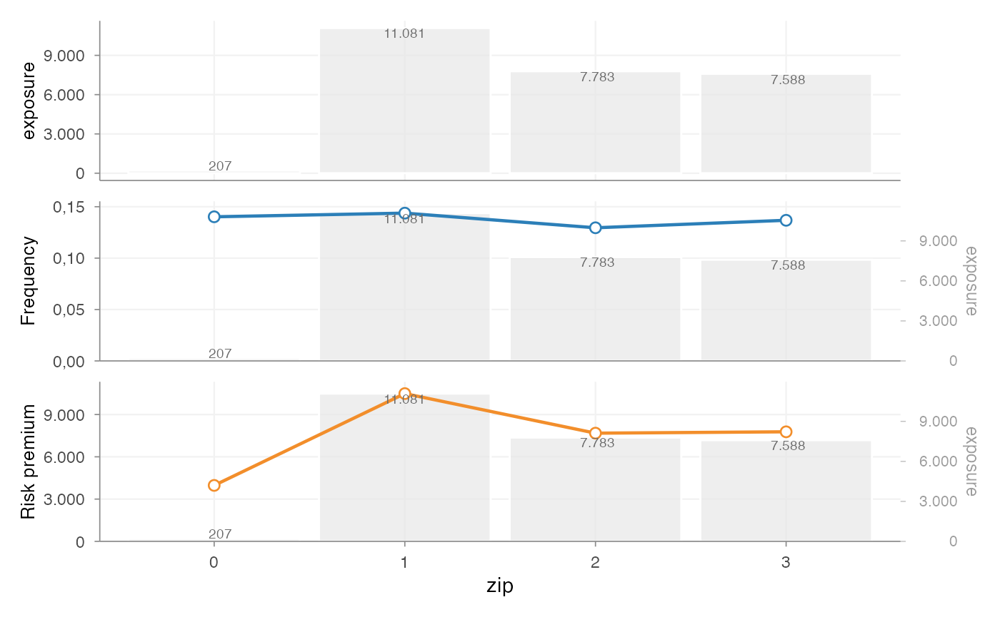
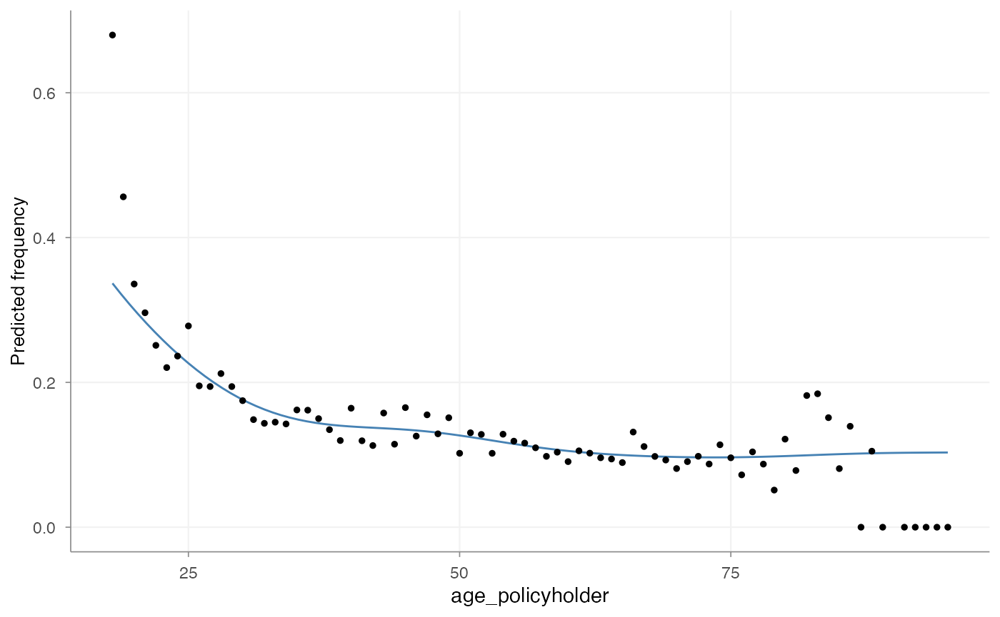
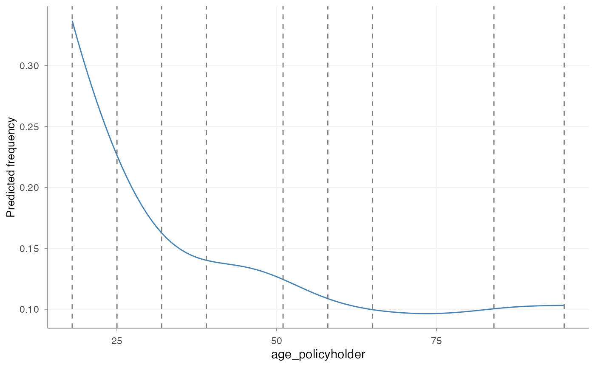
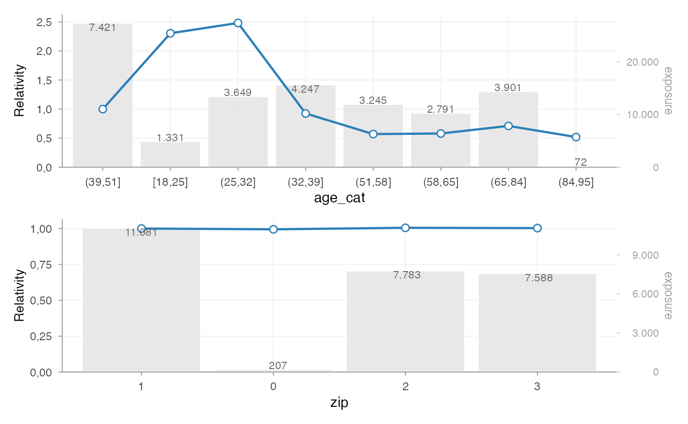
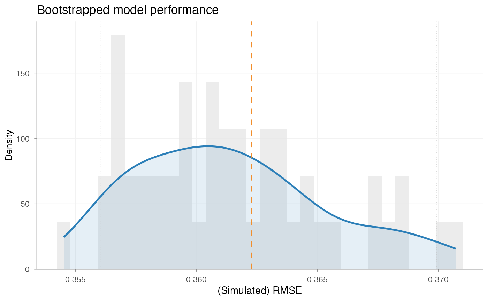

Introduction
insurancerating provides actuarial building blocks for
insurance pricing in R.
A common GLM-based pricing exercise often combines several tasks:
- portfolio analysis
- model estimation
- interpretation of fitted coefficients
- refinement of tariff structure
This vignette illustrates one way to combine the main building blocks:
- analyse risk factors with
factor_analysis() - estimate pricing models with
glm() - interpret coefficients with
rating_table() - assess model stability with
model_performance()andbootstrap_performance()
The focus is on the transition from portfolio data to an interpretable tariff structure.
Data
We use the example dataset MTPL2, which contains a motor
portfolio with:
- number of claims (
nclaims), - exposure (
exposure), - premium (
premium), - claim amounts (
amount), - several rating factors
library(insurancerating)
library(dplyr)
head(MTPL2)
#> # A tibble: 6 × 6
#> customer_id area nclaims amount exposure premium
#> <int> <int> <int> <int> <dbl> <int>
#> 1 92617 2 0 0 1 90
#> 2 120632 2 0 0 1 82
#> 3 147800 2 0 0 1 47
#> 4 29763 3 0 0 0.0630 44
#> 5 61107 1 1 6066 1 69
#> 6 4318 3 0 0 1 66Step 1 — Portfolio analysis
Factor analysis
A pricing analysis often starts with an analysis of the portfolio.
Before fitting a model, it is necessary to understand:
- how experience differs across factor levels
- whether differences are credible
- whether exposure is sufficient
- whether the observed pattern is plausible
This is done with factor_analysis().
Basic factor analysis
We start by analysing a single risk factor.
fa <- factor_analysis(
MTPL,
risk_factors = "zip",
claim_count = "nclaims",
exposure = "exposure",
claim_amount = "amount"
)
fa
#> zip amount nclaims exposure frequency average_severity risk_premium
#> 1 1 116178669 1593 11080.6274 0.1437644 72930.74 10484.846
#> 2 2 59751985 1008 7782.6301 0.1295192 59277.76 7677.608
#> 3 3 58988962 1038 7587.5644 0.1368028 56829.44 7774.427
#> 4 0 821510 29 206.8438 0.1402024 28327.93 3971.644The output provides commonly used portfolio metrics such as:
- frequency = claims / exposure
- average severity = loss / claims
- risk premium = loss / exposure
- loss ratio = loss / premium
- average premium = premium / exposure
Visualising factor behaviour

This provides a direct view of:
- the distribution of exposure
- the variation in claim frequency
- the variation in risk premium
At this stage, the purpose is not yet to fit a model, but to understand whether the factor behaves in a way that is suitable for pricing.
Step 2 — Continuous variables
Why continuous variables are treated separately
Continuous variables are typically not used directly in a tariff. In pricing practice, they are usually:
- analysed as continuous variables
- translated into tariff segments
- used in a GLM as categorical rating factors
This ensures that the final tariff remains interpretable and implementable.
Analysing the shape with a GAM
age_freq <- risk_factor_gam(
data = MTPL,
risk_factor = "age_policyholder",
claim_count = "nclaims",
exposure = "exposure"
)
autoplot(age_freq, show_observations = TRUE)
This step is used to inspect:
- non-linear patterns
- local volatility
- areas with low exposure
- plausible breakpoints for tariff segments
Deriving tariff segments
age_segments <- derive_tariff_segments(age_freq)
autoplot(age_segments)
This converts the continuous variable into risk-homogeneous tariff segments.
The resulting segments should reflect differences in risk, while remaining suitable for use in a tariff.
Adding tariff segments to the data
dat <- MTPL |>
add_tariff_segments(age_segments, name = "age_cat") |>
mutate(across(where(is.character), as.factor)) |>
mutate(across(where(is.factor), ~ set_reference_level(., exposure)))set_reference_level() sets the reference level to the
level with the highest exposure. In pricing models, this is often the
most stable and interpretable baseline.
Step 3 — Model estimation
Why GLMs are used
Generalized linear models are widely used in insurance pricing because they:
- accommodate non-normal response distributions
- produce interpretable multiplicative effects
- can be translated into tariff relativities
A common decomposition is:
- frequency –> Poisson GLM
- severity –> Gamma GLM
Severity model
mod_sev <- glm(
amount ~ age_cat,
weights = nclaims,
family = Gamma(link = "log"),
data = dat |> filter(amount > 0)
)Frequency and severity are modelled separately because they capture different aspects of the loss process.
Constructing a premium proxy
premium_df <- dat |>
add_prediction(mod_freq, mod_sev) |>
mutate(premium = pred_nclaims_mod_freq * pred_amount_mod_sev)
head(premium_df)
#> age_policyholder nclaims exposure amount power bm zip age_cat
#> 1 70 0 1.0000000 0 106 5 1 (65,84]
#> 2 40 0 1.0000000 0 74 3 1 (39,51]
#> 3 78 0 1.0000000 0 65 8 2 (65,84]
#> 4 49 0 1.0000000 0 64 10 1 (39,51]
#> 5 59 0 1.0000000 0 29 1 3 (58,65]
#> 6 71 0 0.4547945 0 66 6 3 (65,84]
#> pred_nclaims_mod_freq pred_amount_mod_sev premium
#> 1 0.10100599 67736.95 6841.837
#> 2 0.13595893 72328.67 9833.729
#> 3 0.10100599 67736.95 6841.837
#> 4 0.13595893 72328.67 9833.729
#> 5 0.09746194 57782.98 5631.642
#> 6 0.04593697 67736.95 3111.630This produces a pure premium estimate, i.e. expected loss per unit of exposure.
Step 4 — Premium model
Fitting a premium model
burn_unrestricted <- glm(
premium ~ age_cat + zip,
weights = exposure,
family = Gamma(link = "log"),
data = premium_df
)This model combines the rating factors into a single premium structure.
In practice, this is often the model that is closest to the final tariff logic, because it reflects the premium level rather than only individual model components such as frequency or severity.
Step 5 — Interpreting coefficients
Rating table
rt <- rating_table(burn_unrestricted)
rt
#> level risk_factor est_burn_unrestricted exposure
#> 1 (Intercept) (Intercept) 9370.4023322 NA
#> 2 0 zip 0.9946246 207
#> 3 1 zip 1.0000000 11081
#> 4 2 zip 1.0049888 7783
#> 5 3 zip 1.0028308 7588
#> 6 [18,25] age_cat 2.3041459 1331
#> 7 (25,32] age_cat 2.4813038 3649
#> 8 (32,39] age_cat 0.9246871 4247
#> 9 (39,51] age_cat 1.0000000 7421
#> 10 (51,58] age_cat 0.5699965 3245
#> 11 (58,65] age_cat 0.5798450 2791
#> 12 (65,84] age_cat 0.7103948 3901
#> 13 (84,95] age_cat 0.5190330 72rating_table() expresses fitted coefficients in terms of
the original factor levels, including the reference level.
This output is commonly used to inspect tariff relativities.
Visualising coefficients
rating_table(burn_unrestricted) |>
autoplot()
This plot is typically used to assess:
- the relative size of coefficients
- the structure across levels
- the exposure behind each level
- whether additional refinement may be needed
At this stage, the relevant questions are:
- are coefficients sufficiently stable?
- do they follow the expected pattern?
- are some levels driven by limited exposure?
Step 6 — Model evaluation
Model performance
model_performance(mod_freq)
#> # Comparison of Model Performance Indices
#>
#> Model | AIC | BIC | RMSE
#> ---------+----------+-----------+------
#> mod_freq | 22949.04 | 23015.512 | 0.362This provides summary measures of model fit, such as RMSE.
Bootstrap performance
bp <- bootstrap_performance(mod_freq, dat, n_resamples = 50, show_progress = FALSE)
autoplot(bp)
This provides a view of predictive stability by evaluating how performance changes across bootstrap samples.
A single fit statistic is usually not sufficient. In pricing practice, it is also relevant to assess whether the model behaves consistently under small data perturbations.
Step 7 — From model to tariff
At this point, the example has produced:
- portfolio-level insight
- fitted pricing models
- interpretable factor relativities
- basic performance diagnostics
In many cases, a further step is required before the model output can be used as a tariff.
Typical reasons include:
- irregular coefficient patterns
- monotonicity requirements
- externally imposed restrictions
- expert-driven adjustments
This can be handled with the refinement tools described in Refinement building blocks.
Summary
A possible sequence in insurancerating is:
factor_analysis() # analyse portfolio behaviour
risk_factor_gam() # analyse continuous variables
derive_tariff_segments() # derive tariff segments
glm() # estimate pricing models
rating_table() # interpret fitted coefficients
bootstrap_performance() # assess stability
prepare_refinement() # refine tariff structure if neededThe aim is to move from raw portfolio data to a tariff structure that is:
- interpretable
- reproducible
- and suitable for practical pricing use